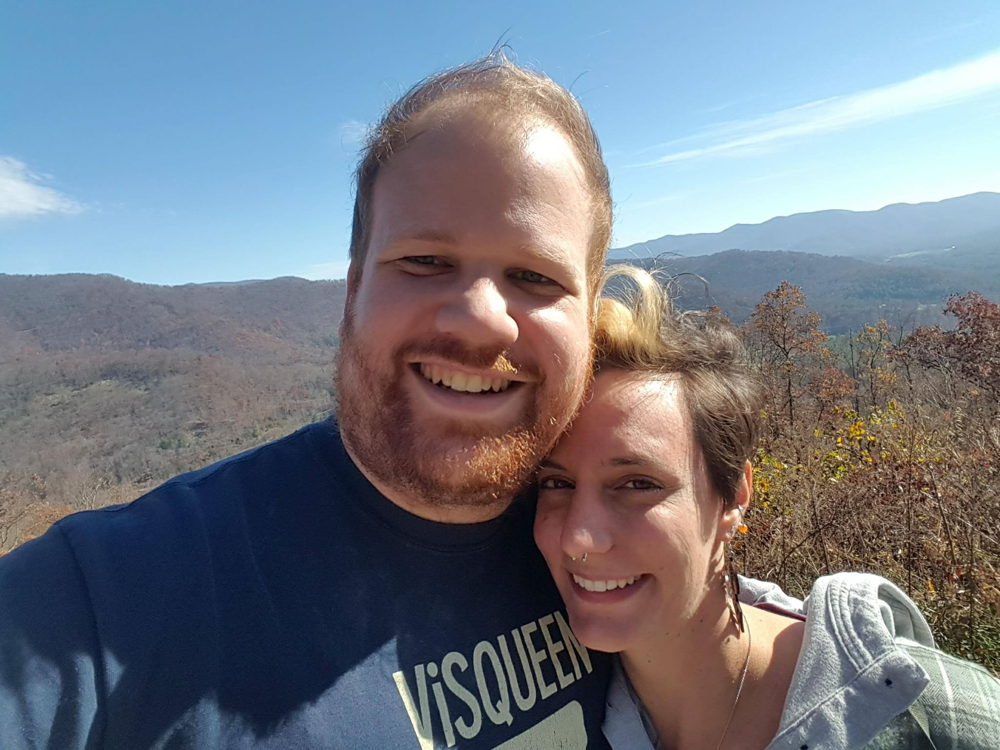

Fun facts
-
I love playing and teaching board games with/to friends and family. My favorite games are:
- All of the FFG cooperative LCGs
- Spirit Island
- Brass Birmingham
- Guards of Atlantis II
-
I have a lot of experience with Scandinavian Folkdance. See above.
-
I lived through the Pollenpocalypse of 2019 in North Carolina.